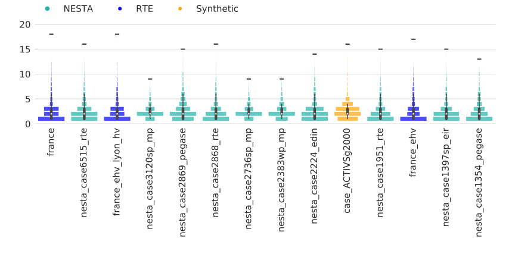
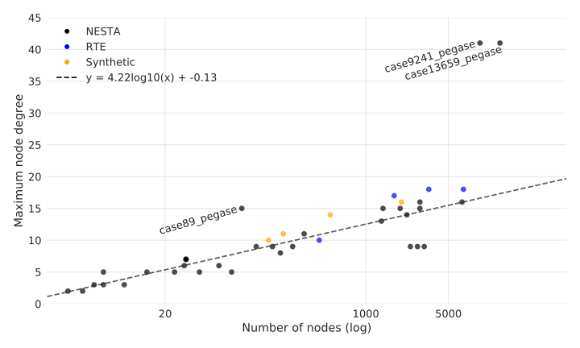

System-wide Metrics
2017-09-29
Jonas Kersulis
kersulis@umich.eduIntroduction
Same spirit as component checks
- Set of networks
- Unweighted graph metrics
- Set of checks
Set of networks
41 networks total:
- 33 community test cases from NESTA
- 5 PEGASE networks
- 4 RTE networks
- 3 Polish grid scenarios
- 2 IEEE RTS cases
- 5 IEEE power flow test cases
- 6 small publication test cases
- 4 recent RTE test cases
- 4 synthetic test cases from Overbye group
Previous work made translation to GRG format in pu easy.
Networks by size
Categories: tiny (<20 nodes), small (20-1k), medium (1k-5k), large (5k+)

Goals
- Perform comprehensive graph analysis of NESTA networks.
- Corroborate unusual characteristics identified by community.
- Combine data spread with technical reasoning to develop easy-to-use set of checks (similar to parameter checks).
Challenges
- Relative weight of test networks
- Calibration of warning thresholds
- Intuitive messages to users
Unweighted graph analysis
- No edge weights, no electrical information
- Graph theory still provides insight
A. Degree distribution
Description
$$\text{Pr}(k=x)=\frac{n_k}{k},$$ where $n_k$ is the number of nodes with degree $k$.
NESTA results
(without large PEGASE networks)
Warning thresholds
- Most oddities picked up by max/median/mean.
- Distributions mainly introduce the next few metrics.
B. Maximum node degree
Description
- Substations rarely have >10 connections.
- High max node degree suggests network reduction.
NESTA results
- High max degree of large PEGASE cases has been pointed out.
- case89 has max degree unusual for its size.
- Size trend only valid for tiny-medium networks; substation connections do not grow arbitrarily numerous with network size.
Warning thresholds
- 10 or higher: warning
- Above $y=3.7\log n + 3.4$: error
C. Mean node degree
Description
- Related to $n-1$ security
- Between 2 and 3 for most networks
- Some outliers, however
NESTA results

- Clump around 2.4: RTE + Polish
- Clump around 2.7: PEGASE + IEEE
Warning thresholds
- Mean degree > 3: warning
- Mean degree > 4: error
D. Median node degree
Description
Not useful alone. Can only identify extreme outliers.
NESTA results
- 76% have median degree 2; all other values are 3.
- Largest network with median degree 3 is IEEE 300.
- Removal of generator step-up transformers has no effect on this data.
Warning thresholds
- Median degree 3 for network with >200 nodes: warning
- Median degree > 3: error
E. Degree assortativity coefficient
Description
Extent to which nodes of like degree connect to each other. $$ r = \frac{\sum_{xy}xy(e_{xy} - a_xa_y)}{\sigma_a^2} $$
- $x$, $y$: node degree values
- $e_{xy}$: fraction of all edges connecting a node with degree $x$ to a node with degree $y$
- $a_x$: fraction of all edges that start or end at nodes with degree $x$
- $\sigma_a$: standard deviation of node degree distribution
$r$ is between -1 (perfect disassortativity) and 1 (perfect assortativity).
Illustration

- case9: each node connected only to others with different degree; highly disassortative
- case6: two edges between degree-2 nodes, one between degree-3 nodes; less disassortative
NESTA results

- Slight disassortative trend
- Just 3 networks with $|r|>0.5$
- No discernible size dependence
Reproducing figure from literature (with more data points)
Paul Cuffe wrote a letter to Transactions noting the assortativity anomaly of the large PEGASE network.
Warning thresholds
Use ~1-2 standard deviations as guideline:
- $r\notin [-0.3,~0.15]$: warning
- $r\notin [-0.5,~0.3]$: error
F. Rich club coefficient
Description
- For each degree $k$, divide number of edges between nodes of degree $\geq k$ by number of potential edges between those nodes.
- Example: if a graph has 90% of all possible edges between nodes of degree 10 or greater, the rich club coefficient for $k=10$ would be 0.9.
- Detects "hub of hubs" suggested by high $r$
NESTA results
Warning thresholds
Important: how many nodes are involved in the rich club? one, or dozens? Sensible starting point:
- Consider the set $K_{0.8}$ of degrees with rich club coeff. $\geq 0.8$. Issue warning when there are at least 10 nodes with degree $k\in K_{0.8}$.
Checking NESTA
What happens when we apply our thresholds to NESTA networks?
| Network | Max degree | Mean degree | Median degree | Degree assortativity | Rich club |
|---|---|---|---|---|---|
| case13659_pegase | e | e | w | ||
| case9241_pegase | e | w | e | w | |
| case6515_rte | w | ||||
| case6495_rte | w | ||||
| case6470_rte | w | ||||
| case6468_rte | w |
| Network | Max degree | Mean degree | Median degree | Degree assortativity | Rich club |
|---|---|---|---|---|---|
| case3375wp_mp | w | ||||
| case3120sp_mp | |||||
| case3012wp_mp | |||||
| case2869_pegase | w | w | |||
| case2868_rte | w | ||||
| case2848_rte | w | w | |||
| case2746wp_mp | |||||
| case2746wop_mp | |||||
| case2737sop_mp | |||||
| case2736sp_mp | |||||
| case2383wp_mp | |||||
| case2224_edin | w | ||||
| case1951_rte | w | ||||
| case1888_rte | w | ||||
| case1460wp_eir | w | ||||
| case1397sp_eir | w | ||||
| case1394sop_eir | w | ||||
| case1354_pegase | w |
| Network | Max degree | Mean degree | Median degree | Degree assortativity | Rich club |
|---|---|---|---|---|---|
| case_403_rte | |||||
| case300_ieee | w | w | |||
| case240_wecc | w | ||||
| case189_edin | |||||
| case162_ieee_dtc | w | e | |||
| case118_ieee | w | ||||
| case89_pegase | e | e | e | w | |
| case73_ieee_rts | |||||
| case57_ieee | w | ||||
| case39_epri | |||||
| case30_fsr | |||||
| case30_as | |||||
| case30_ieee | |||||
| case29_edin | w | ||||
| case24_ieee_rts |
| Network | Max degree | Mean degree | Median degree | Degree assortativity | Rich club |
|---|---|---|---|---|---|
| case14_ieee | |||||
| case9_wscc | e | ||||
| case6_ww | w | w | |||
| case6_c | |||||
| case5_pjm | w | ||||
| case4_gs | |||||
| case3_lmbd |